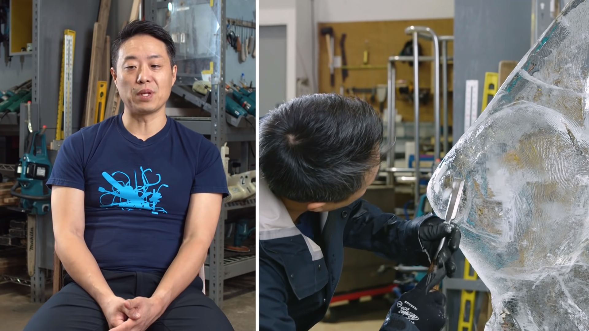
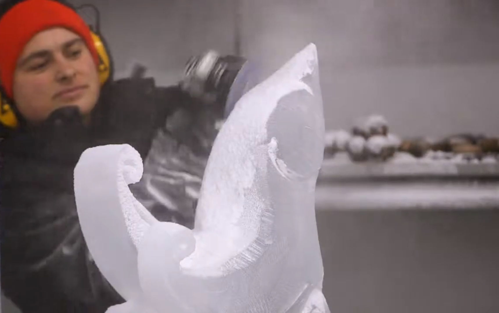

Formation du bloc
Une grande quantité d'eau est gelée dans une direction afin de pousser les impuretés hors du liquide tout en le refroidissant.
Dessin du croquis
À l'aide d'un outil fin comme un pic à glace, l'artiste trace une première ébauche de l'œuvre sur la surface du bloc.
Forme grossière
Les premiers volumes peuvent être obtenu avec une scie, qui n'autorise que des lignes franches et droites.
Détails de base au burin plat
Les éléments les plus simples sont taillés avec un burin plus ou moins large tout le long de la glace.
Détails complexes avec les plus petits burins
Les détails un peu plus fin sont sculptés avec de plus petits burins.
Détails finaux avec le burin en V
Ce qui demande le plus grand soin dans la sculpture, tel que les pupilles, les griffes, les écailles, etc. sont tracés avec un burin en V.
Fusion
De l'eau chaude est versée sur la surface d'un bloc, puis un second bloc est placé sur la face chauffée pendant un certain temps, enfin il est relâché lorsque les morceaux ont fusionés.
Découpage avec une tronçonneuse
À partir d'un bloc de départ donné, des formes plus incurvées peuvent être coupées avec une tronçonneuse.
Détails avec une meuleuse
Les détails peuvent aussi être obtenu en traçant à travers le solide avec une meuleuse.
Affinage des détails avec une perceuse

On peut aussi créer des choses très infimes avec une perceuse à foret de très petit diamètre.
Découpe avec une disqueuse
Le volume peut être taillé avec une disqueuse pour des formes plus précises.
Séchage au chalumeau
Une fois la sculpture achevée, elle est séchée en utilisant un chalumeau afin d'éliminer les gouttelettes ainsi qu'illuminer le travail du sculpteur.